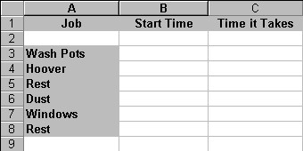
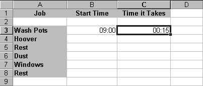
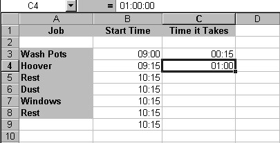
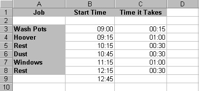

Free
computer Tutorials
|
Free
computer Tutorials
|
|
 HOME
HOME
|
Stay at Home and Learn | |||||
How to use the Time Function in Excel
Getting the time into a spreadsheet cell is fairly straightforward. First, use the Now() Function. Then format the cell to the Time format you want. We'll go through it now. To enter the Time function, do the following:
=Now( )
When you press the Return key, Excel will give the current date and
time. To get only the time, do this:
The thing to bear in mind about the Time function is that Excel doesn't update it every second. So you can't use it like a normal clock. But Excel will update the Time when you enter a calculation. As an example, try this:
You don't have to use the Now( ) function to get the Time. We'll see
how to get the Time another way, and we'll construct a timetable. A TimetableStart on a new spreadsheet, and create the same labels as the ones in the image below:  What we're going to do is enter a start time of 9 in the morning. That's when we start washing the pots. We'll estimate how long it takes to wash the pots in the C column, under "Time it Takes". We'll add the "Time it Takes" to the "Start Time" to get a new start time for the Hoovering . But you'll see how it works as we go along. The first task is to format the Start Time column. So:
The next thing to do is enter a time for cell B3, the Start time. Now that you have formatted the B column as a Time, you can go ahead and just enter a time. Do this:
We'll assume that we're very fast at washing pots (it's all that practice!).
So we'll spend just 15 minutes on this job.
Excel will probably enter 00:15 for you. (The first two zeros are for the hour.) Your spreadsheet will now look like this:  We now need to add 15 minutes to the starting time of 9 AM. So do the following::
= B3 + C3
OK, we have a start time for the hovering - 9:15 in the morning. We
can get Excel to Auto Fill the rest of the formulas, because they'll
be same. So:
The only thing left for us to do now is enter some times for the "Time
Taken" column.
 OK, you can enter all the other figures yourself. Enter these figures in the remaining "Time it Takes" column:
When you are finished, you should have a timetable like the one below: 
And that's how to construct a simple timetable. Working with times can be quite tricky, and a good knowledge of Excel functions will stand you in good stead. But we'll leave the Time function, and move on to something else
We'll now move on to some financial formulas. Explore Financial Functions in Excel --> <--Back to the Excel Contents Page
|
||||||
|